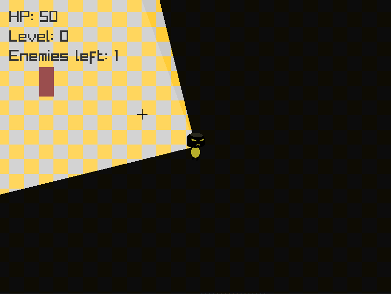
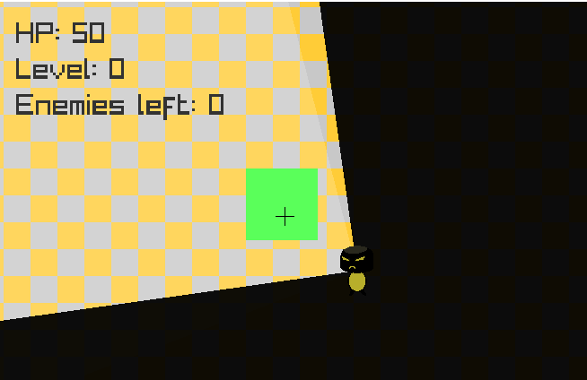

Top Down Shooter
This is a post about a first program I made in Odin-lang and the experience of working in odin itself. Idea was to create a game that will simply allow player movement and some basic shooting. To complete the game I decided to add enemies and some indicators of game state. It describes morso my first experience with odin and raylib than how-to for the app.
Why odinlang and 2d shooter
Normally I am a web developer but I have already found out that I do have to dedicate some of my free time to exploring other programming topics to not get stagnant and bored. One of the things that I really find disturbing is the amount of stuff we use in webdev without really knowing how it works under the hood. And so I always found it fun to write very simple code from the ground up, that would allow me to understand pretty much everything that is happening.
I've come across odin just by pure coincidance - by YT algorithm blessing. I've seen an interview with a creator during which I heard sentence which immediately bought me.
I do want "batteries included" in core lib and vendor
Which in context meant that the odinlang aims to have enough features without downloading packages to build most things.
I always found it a bit more fun to code something video game related and the first thing that came to my mind was a 2D top down shooter. This way I could write a simple program, test out the language and don't have to think too much about logic becouse top-down perspective is alot simpler that others.
The Game
So the game is very simple. You spawn on the arena that has a fence that won't let you go out and inside monsters spawn. You use MLB to shoot and by shooting enemies you can clear your way to the next level.
In the top left you have 3 texts that are important to the function of the game. HP - you lose it by being close to enemies and if it reaches 0 you lose the game. The app will display "you lose" screen and close soon after.

Next text displays "Level" which basically says how many times you have cleared all enemies and entered green rectangle a.k.a "next level door". The last text is Enemies Left which as the name states shows how many more enemies will spawn until the level is cleared. If you look closely at the gif above you may have seen that after killing the last enemy left, a green rectangle will spawn which is a door to the next level.
And that pretty much it. I was thinking about adding more things but I had to stop myself and remember that this project was meant only to get a feel for whether odin is for me. And to be frank, it was a pleasure to code this project in odin with it's raylib support.
The learnings
First and foremost I got a bit accustomed to the odins syntax. I do like the simple ":=" as a variable declaration and where ":" is to indicate type and "=" is for assignment. I also liked the novelty of creating in a non object oriented language
Getting used to not using classes and objects and just having functions that manipulate data the way I want made it alot different in the way I naturally approach coding. Instead of thinking which function goes to which class and how do I want to structure them I could simply write code that does what it's supposed to do - manipulate data and return some values.
Another thing that seemed usuful was "defer" keyword which makes the function or block of code execute at the end of scope. This way you can do some usuful things like deferring drawing text to the very end of rendering loop so that text is always on top of everything or just defering the freeing of allocated data right after you allocate it (this makes it alot more readable to me).
It was my first honest try do something by myself with a language that does not have garbage collector so I had run into few new problems since I started using such language. Especially not freeing allocated memory. That's where I've come to appriciate odin tracking allocator. Just by including few lines of code you can setup your code in such a way that it will tell you how much of the memory at the programs end has been left allocated (unintentionally not freed).
Summary
There's not much more to say. Odin felt good. Raylib felt good. I'd definetly recommend trying both of them together.